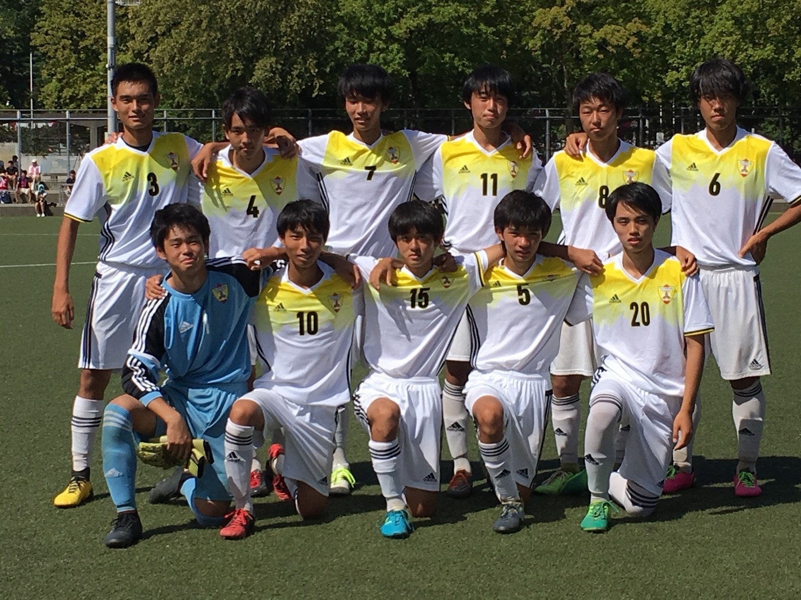
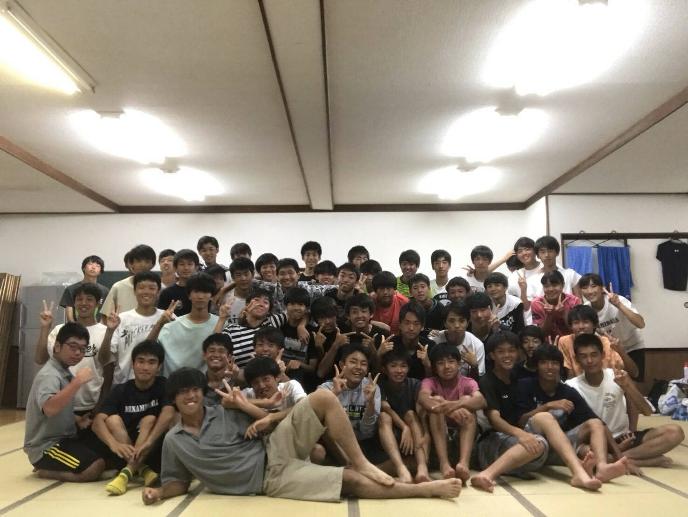

<!DOCTYPE html>
<html lang="ja">
  <meta charset="utf-8">
  <meta name="viewport" content="width=device-width, initial-scale=1">
  <title>SOCCER | YUTA★WEB</title>
  <link href="https://fonts.googleapis.com/icon?family=Material+Icons" rel="stylesheet">
  <link rel="preconnect" href="https://fonts.googleapis.com">
  <link rel="preconnect" href="https://fonts.gstatic.com" crossorigin>
  <link href="https://fonts.googleapis.com/css2?family=Teko:wght@700&display=swap" rel="stylesheet">
  <link rel="preconnect" href="https://fonts.googleapis.com">
  <link rel="preconnect" href="https://fonts.gstatic.com" crossorigin>
  <link href="https://fonts.googleapis.com/css2?family=Abril+Fatface&family=Josefin+Sans:ital,wght@1,700&family=Teko:wght@700&display=swap" rel="stylesheet">
  <link rel="stylesheet" href="css/style.css">
  <link rel="icon" href="img/logo.png">
</html>
<body>
  <div class="big-bg-blog">
    <header>
      <div class="header-container">
        <div class="header-left">
          <h3>Yuta★Web</h3>
        </div>
        <div class="header-right pc-menu">
          <nav>
            <ul>
              <li><a href="index.html">HOME</a></li>
              <li><a href="portfolio.html">PORTFOLIO</a></li>
              <li><a href="photo.html">PHOTO</a></li>
              <li><a href="contact.html">CONTACT</a></li>
            </ul>
          </nav>
        </div>
        <div class="sp-menu">
          <span class="material-icons"  id="open">
            menu
          </span>
        </div>
      </div>
    </header>
    <div class="heading-sub">
      <h1>(SOCCER)</h1>
    </div>

    <div id="top">top</div>
 </div>

<div class="overlay">
  <span class="material-icons" id="close">
    close
  </span>
  <nav>
    <ul>
      <li><a href="index.html">HOME</a></li>
      <li><a href="portfolio.html">PORTFOLIO</a></li>
      <li><a href="photo.html">PHOTO</a></li>
      <li><a href="contact.html">CONTACT</a></li>
    </ul>
  </nav>
</div>

<section id="soccer">
  <div class="soccer-container wrapper">

    <article class="blog-wrapper api" id="champ">
        <h3 class="title">強豪校との壮絶な試合</h3>
        <p class="sup">前年度公式戦で1勝もできなかった弱小高校が勝ち上がり強豪と対戦に。</p>
        
        <div class="blog-text">
          <p>私たちの高校はいわゆる周辺の高校から弱小だと言われるような高校でした。そのため練習試合で強いチームとの試合はほとんどありませんでしたし、公式戦で勝ち上がることもないのでそこでもほとんど強いチームと対戦するような機会はありませんでした。しかし、代が変わって私たちの学年が部内で最上級生になったあたりから状況は大きく変化していきました。これまで手戦力であった先輩方は練習への取り組む姿勢がひどく、どこかやる気がありませんでした。私たちはまずその問題を解消しました。それだけでだいぶチームの戦う姿勢は変化していきました。そんな中で迎えた初の公式大会。私たちの学校は周辺の学校よりも引退するのが早かったため、相手チームは一つ上の学年でした。しかし、大会が始めると私たちはそのハンデを意識することなくがむしゃらに戦いました。1試合目、2試合目と順当に勝ち上がると3試合目にはなんと全国大会出場経験もあった東京都屈指の強豪校である国士舘高校との対戦となりました。私たちのチームは前年度公式戦で一度たりとも勝つことが無かったのでこのような対戦カードになるというのは夢にも思いませんでした。前半に相手のうまさに驚いて動きが悪くなってしまい立て続けに失点し4点とられてしまいましたが、後半は持ち直し、なんと後半だけだと0-0で同点でした。結果は0-4の敗北となりましたが、やり切った気持ちでいっぱいでした。国士舘高校はその後、たくさんのライバルたちを差し置いて東京の大会で優勝し、全国大会に出場しました。そのような高校と対戦出来たことは私にとって最高の思い出となりました。
          </p>
        </div>
    </article>

    <article class="blog-wrapper api" id="training-camp">
      <h3 class="title">全力の青春</h3>
      <p>高校二年生にして迎えた最後の合宿。</p>
      
      <div class="blog-text">
        <p>所属していたサッカー部は7月の後半に新潟での合宿がありました。私たちの学校は5月ごろに引退を迎えるため二年生のこの合宿が最後となります。合宿はとにかく走ることがメインでした。初日、合宿場についてすぐに、二年生は約8キロのランニングをします。炎天下の中でのランニングは今思えばとんでもなくきついものでした。しかし、この最初のランニングは行ってしまえば準備運動みたいなものです。それが終わると次はボールを使った練習を日が落ちるまでします。最後にはフィジカルトレーニングがあり、一日目が終わります。二日目以降は12キロを走ってからボールを使った練習が始まります。足がなかなかうまく動かず、普通のサッカーとは違う感覚に陥っていました。しかし、この合宿にはいくつか楽しいこともありました。夜はほとんどが自由な時間なので、くらい田舎町を散策したり、花火をしました。とても青春を感じましたし、もう二度と来ることは無いんだろうなと思うと最終日には少し悲しい気分になりました。きつかったけれどまた行きたいと思える一週間でした。</p>
      </div>
    </article>

  </div>
</section>


<section id="footer">
  <div class="footer-container wrapper">
    <div class="about">
      <h2 class="fot-title">About</h2>
      <div class="about-text">
        <p>こちらのサイトは駆け出し大学生エンジニアによるはポートフォリオサイトとなっております。下記のブログの詳細についてもご覧いただけると幸いです。</p>
      </div>
      <nav>
        <ul class="list_triangle">
          <li><a href="trip.html">BLOG(観光)</a></li>
          <li><a href="meals.html">BLOG(グルメ)</a></li>
          <li><a href="soccer.html">BLOG(サッカー)</a></li>
        </ul>
      </nav>
    </div>
    <div class="menu">
      <h2 class="fot-title">Menu</h2>
      <nav>
        <ul>
          <li><a href="index.html">HOME</a></li>
          <li><a href="portfolio.html">PORTFOLIO</a></li>
          <li><a href="photo.html">PHOTO</a></li>
          <!-- <li><a href="contact.html">CONTACT</a></li> -->
          <li class="last-border"><a href="contact.html">CONTACT</a></li>
        </ul>
      </nav>
    </div>
    <div class="twitter">
      <h2 class="fot-title">Twitter</h2>

      <a class="twitter-timeline" data-height="340" href="https://twitter.com/aUPS7qtUCYEpfsA?ref_src=twsrc%5Etfw">Tweets by aUPS7qtUCYEpfsA</a> <script async src="https://platform.twitter.com/widgets.js" charset="utf-8"></script>
    </div>
  </div>
  <p class="copy-right">© YUTA SUGIMINE ALL RIGHTS RESERVED</p>
</section>

  <script src="js/script.js"></script>
</body>